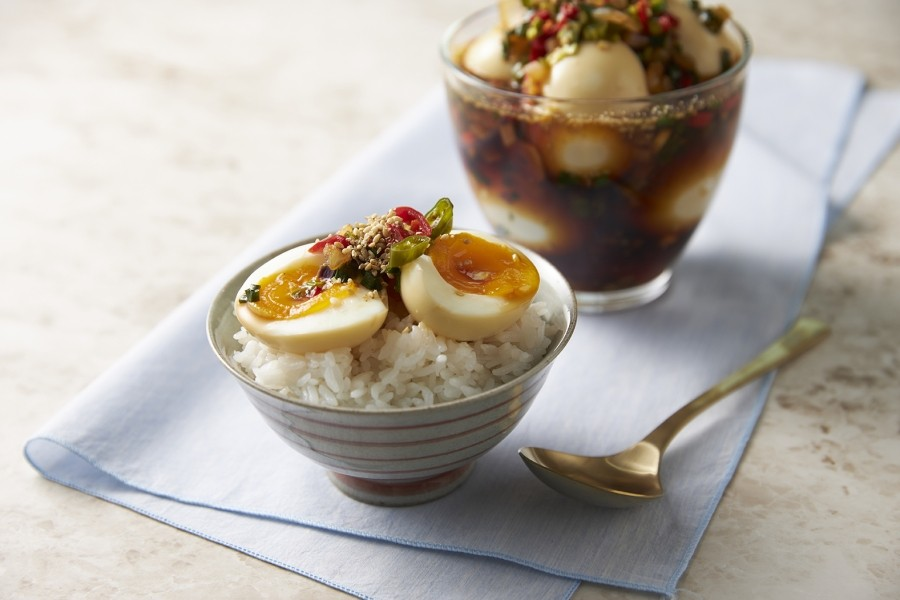
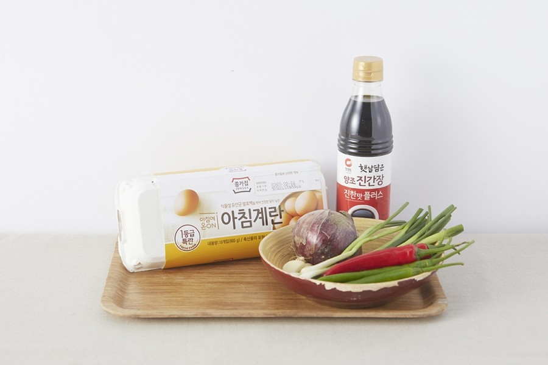
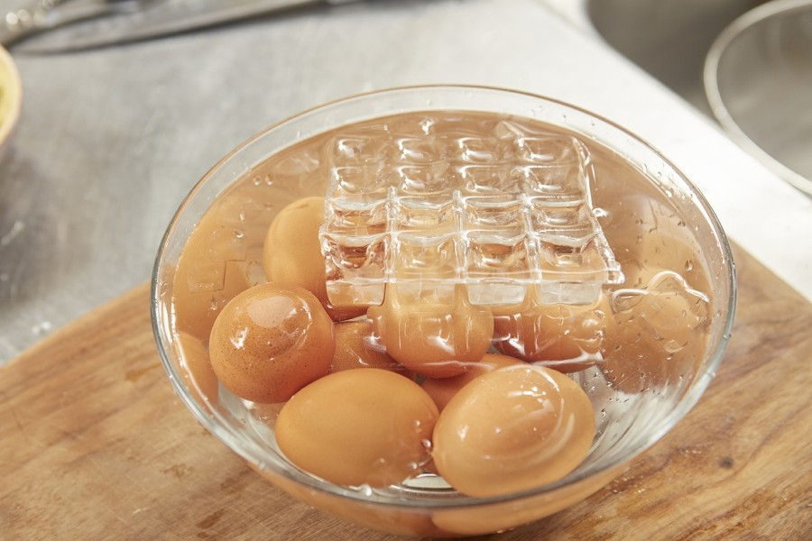
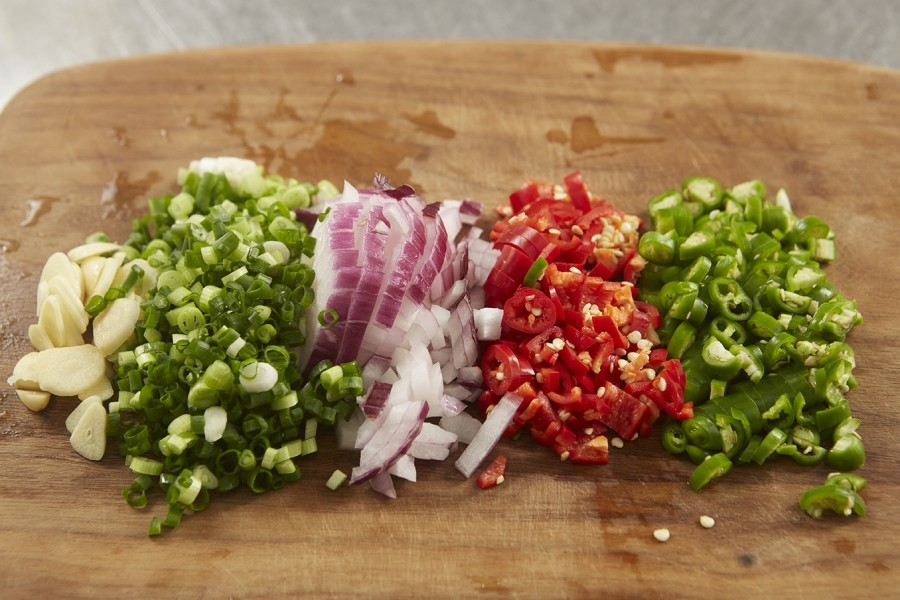
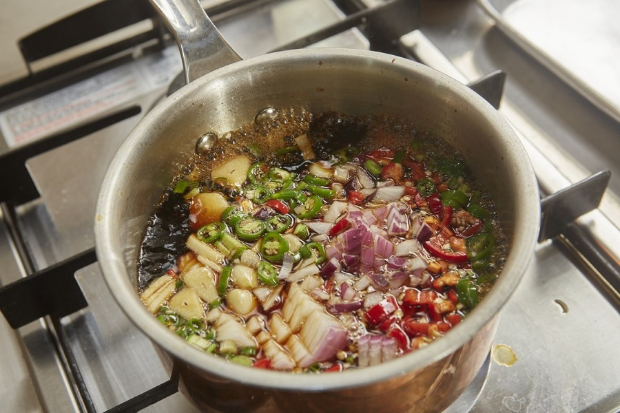
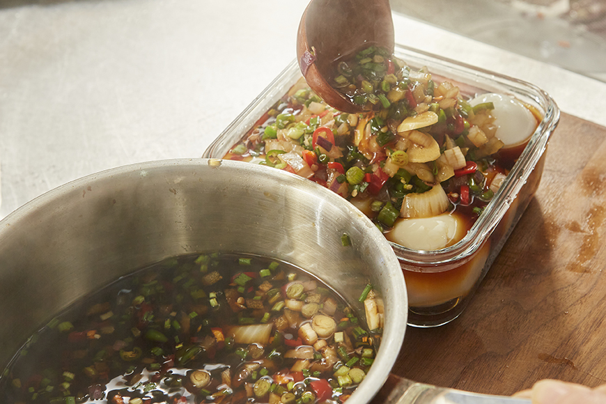
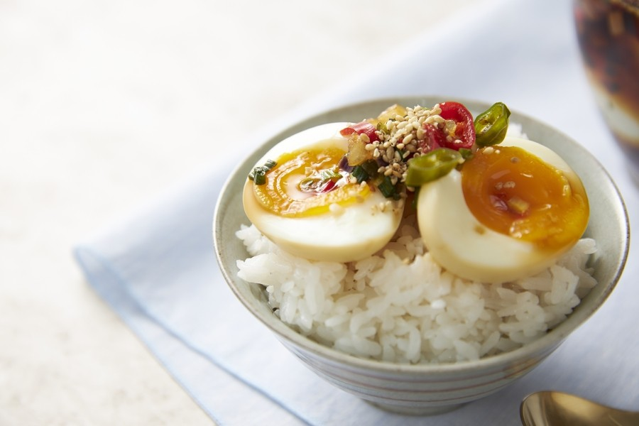

통통한 계란에 비벼먹는 재미, 반숙계란장
조리 40분 | 4인분 | 초급

아이들 반찬, 자취생 반찬으로 인기가 많은 반숙계란장! 통통한 계란이 간장에 푹 절여져 다른 반찬이 필요없을 정도로 맛있게 즐길 수 있는 반찬인데요. 한 번 만들어두면 반찬 걱정 없이 한 끼를 든든히 채울 수 있는 반숙계란장 레시피를 가져왔습니다! 처음 도전하시는 분들도 쉽게 만들 수 있는 정원이표 반숙계란장은 짭짤한 간장양념에 밥을 비벼먹기 딱 좋은 맛이랍니다. 그럼 지금부터 반숙계란장 레시피 보러 가실까요?
통통한 계란에 비벼먹는 재미, 반숙계란장 재료

[재료]
계란 10개, 청양고추 4개, 홍고추 2개, 쪽파 3대, 양파 1/2개, 통마늘 3개, 청정원 두번달여더진한 진간장 골드 1컵, 청정원 요리올리고당 1/2컵, 설탕 1큰 술, 물 1.5컵, 통깨 1큰 술
통통한 계란에 비벼먹는 재미, 반숙계란장 레시피

1. 계란은 찬물에 넣어 끓기 시작하면 5분간 삶아 건져 얼음물에 식힌다.

2. 청양고추, 홍고추, 양파, 쪽파는 다지고 통마늘은 저며 썬다.

3. 냄비에 간장, 올리고당, 설탕, 물을 넣어 끓이다 채소를 넣고 30초간 더 끓여준다.

4. 식힌 계란의 껍질을 벗겨 통에 넣은 후 한김 식힌 간장물을 붓는다.

5. 냉장고에 넣어 하루 정도 숙성 후 통깨를 뿌려 밥 위에 올려 먹는다.
통통한 계란에 비벼먹는 재미, 반숙계란장
계란은 찬물에 넣어 끓기 시작하면 5분간 삶아 건져 얼음물에 식힌다.
청양고추, 홍고추, 양파, 쪽파는 다지고 통마늘은 저며 썬다.
냄비에 간장, 올리고당, 설탕, 물을 넣어 끓이다 채소를 넣고 30초간 더 끓여준다.
식힌 계란의 껍질을 벗겨 통에 넣은 후 한김 식힌 간장물을 붓는다.
냉장고에 넣어 하루 정도 숙성 후 통깨를 뿌려 밥 위에 올려 먹는다.
COPYRIGHT 청정원. ALL RIGHTS RESERVED.